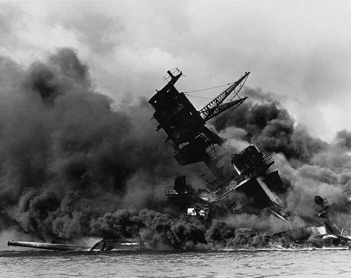

Los acontecimientos que condujeron al ataque a Pearl Harbor comenzaron en julio de 1940 cuando, meses después del estallido de la Segunda Guerra Mundial, los militares y políticos japoneses partidarios de la alianza con la Alemania nazi y la Italia fascista —que acababan de derrotar a Francia— consiguieron derribar al primer ministro Mitsumasa Yonai, que se había opuesto al pacto porque consideraba que llevaría a la guerra con el Reino Unido y con Estados Unidos. El giro en la política exterior de Japón quedó confirmado en septiembre cuando decidió ocupar el norte de la Indochina francesa y firmó el Pacto Tripartito que lo ligaba a las potencias europeas del Eje.

El acorazado USS Arizona instantes después de ser alcanzado por un proyectil japonés durante el ataque a Pearl Harbor
En mayo del año siguiente, Estados Unidos expuso su posición en los llamados Cuatro Principios, presentados por el secretario de Estado Cordell Hull absolutamente contrarios a la política expansionista japonesa, que tenía como objetivo el establecimiento de un área exclusiva en Asia Oriental y el Pacífico occidental llamada Esfera de Coprosperidad de la Gran Asia Oriental. La invasión alemana de la Unión Soviética a finales de junio de 1941 fue aprovechada por Japón para completar la ocupación de la Indochina francesa, una operación ante la que el presidente estadounidense Franklin D. Roosevelt reaccionó con la imposición de duras sanciones económicas que incluían el embargo de las exportaciones de petróleo
Los Estados Mayores del Ejército y de la Armada imperiales, apoyados por el ministro de la Guerra, general Hideki Tojo, presionaron al primer ministro, Fumimaro Konoe, para entrar en guerra con Estados Unidos; ante la imposibilidad de Konoe de ampliar la fecha límite establecida para llegar a un acuerdo con Estados Unidos antes de recurrir a la fuerza, el 16 de octubre presentó su dimisión. Le sustituyó el general Tojo, que recibió el encargo del emperador de agotar todas las posibilidades para llegar a un acuerdo diplomático antes de desencadenar la guerra. La nueva fecha límite se fijó para el 30 de noviembre, aunque los preparativos bélicos no se abandonaron —el plan de ataque a la base naval estadounidense de Pearl Harbor presentado por el almirante Yamamoto fue aprobado el 20 de octubre, el mismo día en que se constituyó el gabinete de Tojo— y los líderes políticos y militares japoneses no hicieron ninguna concesión importante a las demandas estadounidenses, excepto la retirada de las tropas japonesas del sur de Indochina, por lo que el 26 de noviembre de 1941 el secretario Hull entregó a los representantes japoneses la que después sería conocida como la Nota Hull, en la que se exigía a Japón la retirada completa no solo de Indochina, sino también la de China, así como la ruptura de la alianza con la Alemania nazi.
La Nota Hull fue considerada como un ultimátum por los dirigentes japoneses, y el 1 de diciembre la Conferencia Imperial daba luz verde no para entrar en la guerra
El momento elegido quedó fijado en las 8:00 horas (horario de Hawái, 13:30 en Washington D. C.) del 7 de diciembre de 1941.
Un problema técnico relacionado con el desciframiento del mensaje por la embajada japonesa hizo que el comunicado se entregara a las 14:20 horas, cuando ya hacía una hora que los aviones japoneses habían iniciado el bombardeo. Al día siguiente el presidente Roosevelt se dirigió al Congreso para pedir la declaración de guerra a Japón. Su discurso comenzó diciendo: «Ayer, 7 de diciembre de 1941, una fecha que vivirá en la infamia, Estados Unidos de América fue atacado repentina y deliberadamente por fuerzas navales y aéreas del Imperio japonés».